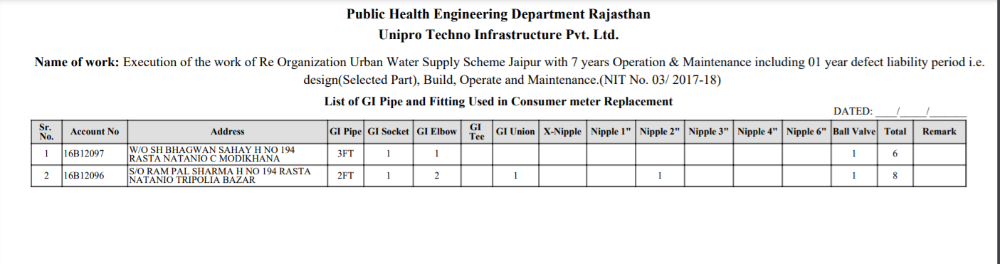

Unipro Techno Infrastructure Pvt. Ltd. Increased Workflow Productivity With Kodago
21 May, 2021
The rising urge of all sectors (including infrastructure, construction, etc.) in today’s time is the single solution that
- Collects the data in a systematic and standardized way
- Manages the workflow
- Displays the precise analytics of the entire datasheet
With Kodago, Unipro Techno Infrastructure Pvt. Ltd. experienced the smooth and structured management of the data workflow which seamlessly helped them manage, access, optimize, and analyze the data.
Explore how they used Kodago to witness the rise in the productivity rate and create a distinctive work structure.
The Company

Started in 2006, Unipro Techno Infrastructure Pvt. Ltd. is one of the renowned construction companies, entrusted with water supply projects. Apart from this sector, UTIPL is also engaged with various infrastructure development projects such as highway projects, bridges projects, irrigation projects and electro-mechanical projects.
With the aim to achieve excellence, UTIPL aspires to join hands with latest technology-driven solutions to organize the progressions and coordinate it with the team effectively.
The Challenges
“Data is omnipresent- it is the mover and shaker of all industries. Simply speaking, no industry is left untouched with the volumes of unstructured and unmanaged data.”
The new working plan initiated by the company was to exchange the existing household water supply meters in the district of Jaipur with the new ones. Unipro Techno Infrastructure Pvt. Ltd. used traditional ways to capture the data and manage it.
So, the challenges were manifold ranging from handy booklets, manual record entry, and manual reporting.
- The employees of the company used the booklets/log books to write the details and store the relevant information. This was a tedious task as they had to write manually each and every information related to old and new meters which reduced their working efficiency at the end of the day. They could merely cover a few houses in a day.
- Along with this, they used to click the pictures of the old and the newly installed meters on their smartphones as the proof that was used while submitting the report. The images were then saved along with the house number to avoid any hassle.
The entire task was a time-consuming process which in-turn limited their proficiency. So, there was a need for a solution that can trim down their workload, increase the efficiency and foster productivity.
The Solution
There was the need for the methodology that could be employed to gather data from the targeted source to access the parameters and design the reports.
In the quest of the solutions to the above-mentioned challenges, UTIPL fused their workflow with the algorithms of KODAGO, which turned the tables for the company.
With Kodago, they can now manage, optimize, and access their work seamlessly. This tool helped the company to create accountability and allow structured communications.
Using Kodago, UTIPL created an individual File Rack of all the employees based on the areas they were assigned. This helped the employees to add the specific details to their assigned File Racks. Here is how Kodago worked as an assisting tool for the company.
- Build workflow groups easily
Kodago being an data management tool, helped the company to build groups based on the localities and areas. These groups helped the employees of the company to communicate with each other internally, share the concerned data reports, add images of the meters, and create a structured database for future use.
- Create distinctive file racks and manage them
This feature of Kodago worked as the gem for the company. With this, UTIPL team created comprehensive and customized file racks that could store all the relevant information related to the meters.
Also, this tool assisted the employees and helped them store the textual as well as visual data in an organized way, wherein, they added different fields such as
- House number
- Old meter reading
- Old meter image
- New meter reading
- New meter image
- Date of exchange
- Meter status
- Fittings size
- Fitting type, etc.
By clicking on “View”, admin could have access to the image of the new and old meters, which can further be downloaded for the future references.
This even helped them to manage different forms of data all together such as image, text, date, location, etc. These file racks did wonders to the team as it enhanced the workflow discipline and accelerated their speed of capturing data.
- Establish active internal communication
Data from different locations was all stored in a single group of database under respective file racks. This helped the admin to have access to the entire data at a single time without any chaos and complexity. The moment the new field would be added in the file rack, the admin will get notified to review it. This therefore, enabled a strong internal communication and efficiency.
- Provide authentic data insights and analytics
The last but the most important part of Kogado is data analytics i.e. its ability to design and produce the reports in just a few clicks.
This helped the company to get the insightful reports of the entire data collected and track the performance of the employees as well.
Automatic Reporting With Kodago
As an infrastructure company, UTIPL was required to submit the reports to the government department in the pre-defined format.
Traced back to the recent past, where traditional methods were used to design the reports, the entire task was the ocean of complexities. With Kodago, the company can now print the reports in just a few clicks.
The team at Kodago created the new algorithm to design the report as per the requirements of the company. It gave the company various different options to generate the reports which can then be submitted to the higher officials.
These reports are generated based on File Rack number, binder number, and date of survey to aid the search process of the employee.
Let us have a glimpse of the various types of the reports used by the company.
- Data sheet
This report displayed the daily work done by the employee in the tabular form. Normally termed as “Daily job card”, this represented the entire details of the new and the old connection along with the date of replacement.
- Fitting Report
This report displayed the list of GI pipes and fittings used in consumer replacements.
- Receipt Report
This report was generated as the receipt of consumer water meters such as the meter number, last reading, status, size, and meter company.
- Image Report
The most important type of report was the image report. It displayed the specifications and details of the old meter towards the left and of the new meter towards the right of the page, as shown below.
The Results
This solution transformed the working system of the company and helped the company boost its performance and constructiveness in a streamlined way.
Also, the automatic reporting system helped the company to generate automatic reports thus minimizing the manual efforts and time.
This therefore, enabled real-time communication between the employee and the company head which in turn diminished the concept of re-work and inefficiencies.